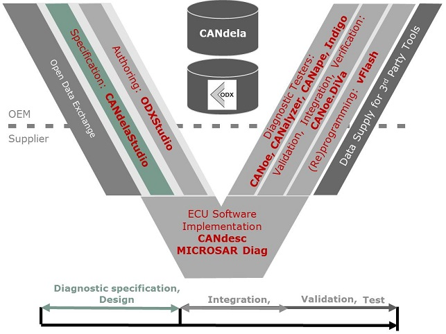

Vector tools cover the entire diagnostic toolchain:

The CANdela Tool Chain
For detailed information about Vector tools, see the "Products" section in the Vector homepage vector.com.
PREEvision may be used for requirements modelling and documentation at the vehicle-level:
CANdelaStudio lets you view, edit and export CANdela data (CDD), i.e. diagnostic data of control units in the automotive industry and in related areas.
CANdelaStudio especially provides import and export for ODX. ODX files are also usable in the Vector diagnostic toolchain, but are better suited for use with test systems than for an ECU implementation.
With regard to requirements modelling, CANdelaStudio is used for detailed diagnostic specifications at the ECU-level:
ODXStudio is a user oriented authoring tool for diagnostic data in ODX format. It utilizes the native ODX data model (versions 2.0.1 and 2.2.0) to allow an optimal roundtrip.
Custom perspectives adapt to OEM specific ODX authoring guidelines and simplify editing.
The ECU perspective provides a comfortable approach for editing UDS data.
ODX-F container generation supports a flash process.
CANdesc uses CANdela or ODX data to generate the protocol part of the ECU implementation: it provides a fast and correct implementation of the OEM specific diagnostic protocol. By this, it preserves data consistency between diagnostic specification and implementation.
The application software (functional part of the ECU implementation) must be provided manually, it is connected via a standardized interface.
MICROSAR Diag provides an AUTOSAR compatible implementation of the UDS protocol (basis software):
Some diagnostic modules are:
| DCM | Diagnostic Communication Manager: implements UDS and OBDII services in the ECU |
| DEM | Diagnostic Event Manager: manage detected system events (errors and environmental data) |
| FIM | Function Inhibition Manager |
The Vector tools CANoe, CANalyzer and CANape have add-on diagnostic tester functionality. They consume CANdela or ODX data and communicate with an ECU.
Indigo is a use-case driven Diagnostic Test System that addresses the daily diagnostic tasks with specialized use-case views. It is vehicle oriented and allows to view and modify vehicle-wide parameters and serves as a starting point to dive into the ECUs.
CANoe.DiVa is a test environment for automated validation of ECU diagnostic software: it uses CANdela or ODX data to generate ECU test cases and automates test execution in CANoe.
vFlash supports high-speed flashing over CAN, CAN FD, FlexRay, LIN and Ethernet (DoIP and SoAd).
It handles different protocols and flash sequences in one tool.
vFlash provides an intuitive GUI for configuration and execution as well as an automation interface.